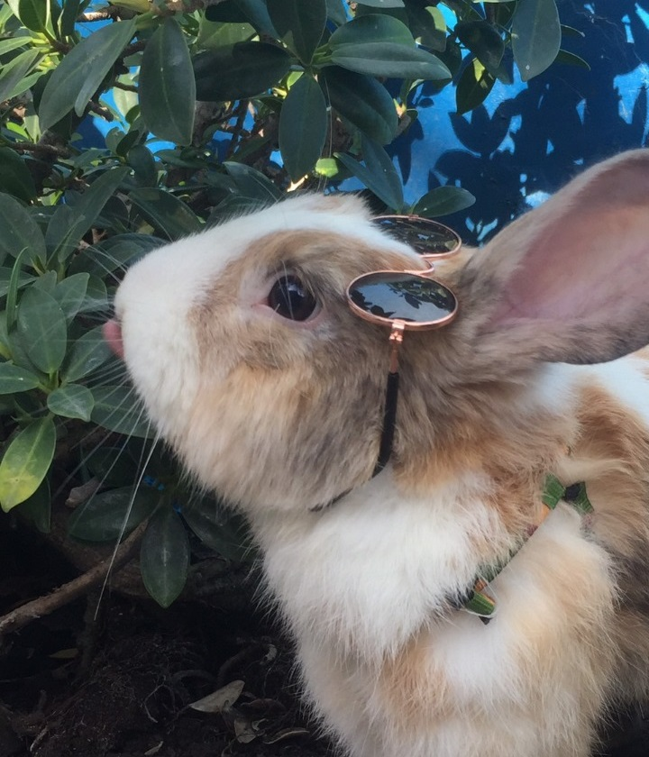
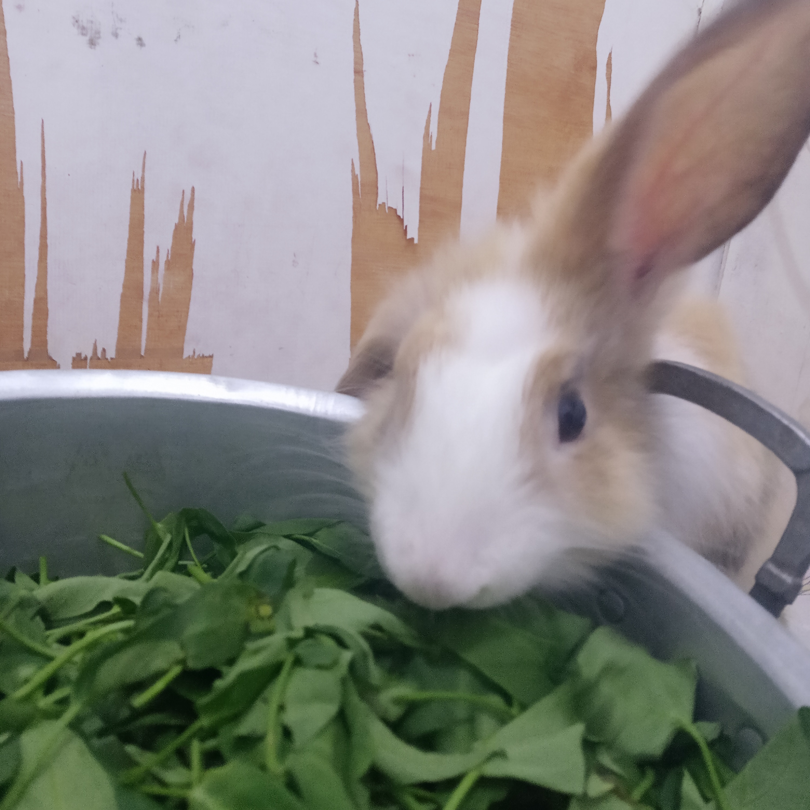
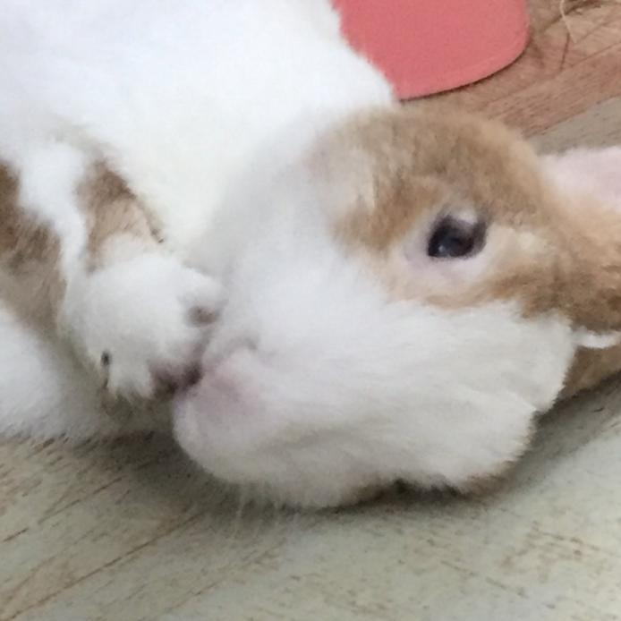
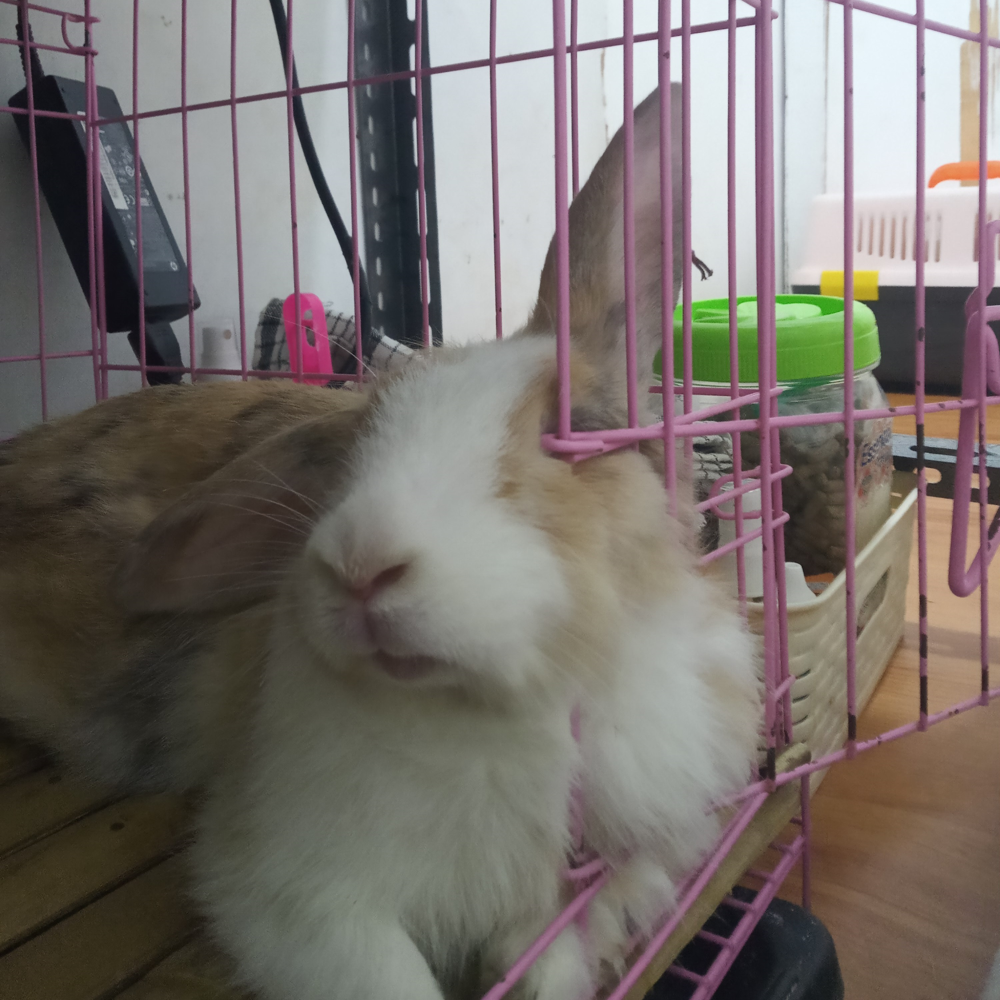

History of Rabbits

Rabbits have a long history of domestication, dating back to ancient times. They were initially kept for their meat and fur, but over time, they have also become popular as pets. Rabbits have been featured in various mythologies and folklores, often symbolizing fertility, agility, and innocence.
Throughout history, rabbits have played essential roles in agriculture, scientific research, and cultural practices. Today, they are beloved pets for millions of people worldwide, cherished for their intelligence, affectionate nature, and unique personalities.
Rabbit Food

Rabbits are herbivores and primarily eat hay, grass, and leafy greens. It's essential to provide them with a balanced diet to ensure their health and well-being. In addition to fresh vegetables, rabbits can also enjoy treats like fruits and herbs in moderation.
Commercial rabbit pellets can be given as a supplement, but they should not replace fresh foods entirely. Providing a variety of textures and flavors in their diet can help keep rabbits mentally stimulated and physically healthy.
Rabbit Care Tips

When keeping rabbits as pets, it's crucial to provide them with a spacious and secure enclosure. Rabbits also need regular exercise, mental stimulation, and social interaction. Interactive toys, tunnels, and hiding places can help keep them entertained and engaged.
Additionally, proper grooming is essential to prevent matting and maintain their coat health. Regular veterinary check-ups are also recommended to monitor their overall health and detect any potential issues early on.
Rabbit Grooming

Grooming is an essential part of rabbit care. It helps prevent hairballs, matting, and other health issues. Regular brushing, nail trimming, and dental care are all necessary for keeping your rabbit healthy and happy. Building a positive grooming routine from a young age can help rabbits become more comfortable with handling and grooming.
It's also essential to provide your rabbit with a clean and comfortable living environment to prevent skin problems and infections. Regular cage cleanings, proper bedding, and adequate ventilation are essential for maintaining a healthy and happy rabbit.